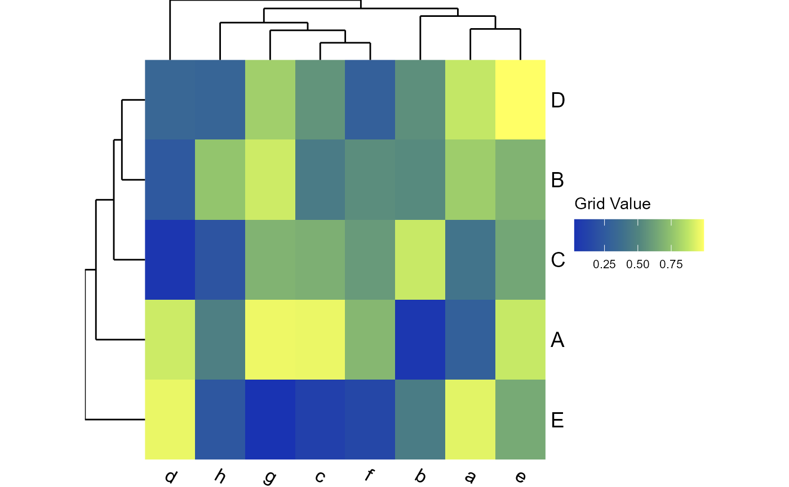
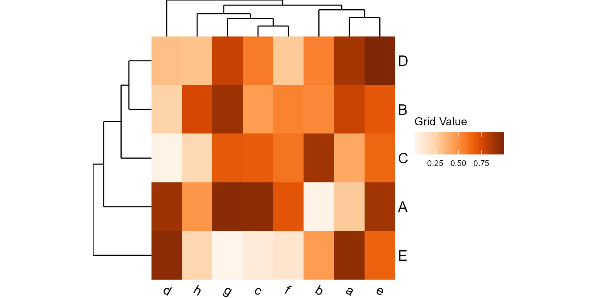
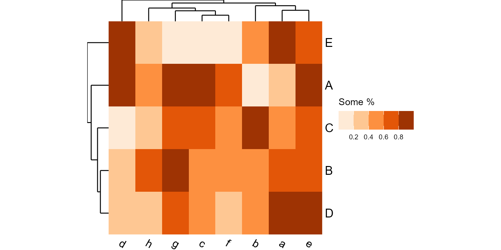
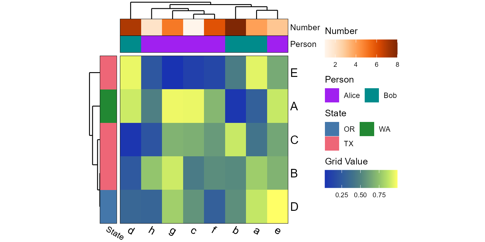

Create a heatmap with tracks and dendrograms from any matrix.
Source:R/plot_heatmap.r
plot_heatmap.RdCreate a heatmap with tracks and dendrograms from any matrix.
Usage
plot_heatmap(
mtx,
grid = list(label = "Grid Value", colors = "imola"),
tracks = NULL,
label = TRUE,
label_size = NULL,
rescale = "none",
trees = TRUE,
clust = "complete",
dist = "euclidean",
asp = 1,
tree_height = 10,
track_height = 10,
legend = "right",
title = NULL,
xlab.angle = "auto",
...
)Arguments
- mtx
A numeric
matrixwith named rows and columns.- grid
Color palette name, or a list with entries for
label,colors,range,bins,na.color, and/orguide. See the Track Definitions section for details. Default:list(label = "Grid Value", colors = "imola")- tracks
List of track definitions. See details below. Default:
NULL.- label
Label the matrix rows and columns. You can supply a list or logical vector of length two to control row labels and column labels separately, for example
label = c(rows = TRUE, cols = FALSE), or simplylabel = c(T, F). Other valid options are"rows","cols","both","bottom","right", and"none". Default:TRUE- label_size
The font size to use for the row and column labels. You can supply a numeric vector of length two to control row label sizes and column label sizes separately, for example
c(rows = 20, cols = 8), or simplyc(20, 8). Default:NULL, which computes:pmax(8, pmin(20, 100 / dim(mtx)))- rescale
Rescale rows or columns to all have a common min/max. Options:
"none","rows", or"cols". Default:"none"- trees
Draw a dendrogram for rows (left) and columns (top). You can supply a list or logical vector of length two to control the row tree and column tree separately, for example
trees = c(rows = T, cols = F), or simplytrees = c(T, F). Other valid options are"rows","cols","both","left","top", and"none". Default:TRUE- clust
Clustering algorithm for reordering the rows and columns by similarity. You can supply a list or character vector of length two to control the row and column clustering separately, for example
clust = c(rows = "complete", cols = NA), or simplyclust = c("complete", NA). Options are:FALSEorNA- Disable reordering.An
hclustclass object E.g. fromstats::hclust().A method name -
"ward.D","ward.D2","single","complete","average","mcquitty","median", or"centroid".
Default:
"complete"- dist
Distance algorithm to use when reordering the rows and columns by similarity. You can supply a list or character vector of length two to control the row and column clustering separately, for example
dist = c(rows = "euclidean", cols = "maximum"), or simplydist = c("euclidean", "maximum"). Options are:A
distclass object E.g. fromstats::dist()orbdiv_distmat().A method name -
"euclidean","maximum","manhattan","canberra","binary", or"minkowski".
Default:
"euclidean"- asp
Aspect ratio (height/width) for entire grid. Default:
1(square)- tree_height, track_height
The height of the dendrogram or annotation tracks as a percentage of the overall grid size. Use a numeric vector of length two to assign
c(top, left)independently. Default:10(10% of the grid's height)- legend
Where to place the legend. Options are:
"right"or"bottom". Default:"right"- title
Plot title. Default:
NULL.- xlab.angle
Angle of the labels at the bottom of the plot. Options are
"auto",'0','30', and'90'. Default:"auto".- ...
Additional arguments to pass on to ggplot2::theme().
Value
A ggplot2 plot.
The computed data points and ggplot
command are available as $data and $code,
respectively.
Track Definitions
One or more colored tracks can be placed on the left and/or top of the heatmap grid to visualize associated metadata values.
## Categorical ----------------------------
cat_vals = sample(c("Male", "Female"), 10, replace = TRUE)
tracks = list('Sex' = cat_vals)
tracks = list('Sex' = list('values' = cat_vals, 'colors' = "bright"))
tracks = list('Sex' = list(
'values' = cat_vals,
'colors' = c('Male' = "blue", 'Female' = "red")) )
## Numeric --------------------------------
num_vals = sample(25:40, 10, replace = TRUE)
tracks = list('Age' = num_vals)
tracks = list('Age' = list('values' = num_vals, 'colors' = "greens"))
tracks = list('Age' = list('values' = num_vals, 'range' = c(0,50)))
tracks = list('Age' = list(
'label' = "Age (Years)",
'values' = num_vals,
'colors' = c("azure", "darkblue", "darkorchid") ))
## Multiple Tracks ------------------------
tracks = list('Sex' = cat_vals, 'Age' = num_vals)
tracks = list(
list('label' = "Sex", values' = cat_vals, 'colors' = "bright"),
list('label' = "Age", values' = num_vals, 'colors' = "greens") )
plot_heatmap(matrix(sample(1:50), ncol=10), tracks = tracks)
The following entries in the track definitions are understood:
values- The metadata values. When unnamed, order must match matrix.range- The c(min,max) to use for scale values.label- Label for this track. Defaults to the name of this list element.side- Options are"top"(default) or"left".colors- A pre-defined palette name or custom set of colors to map to.na.color- The color to use forNAvalues.bins- Bin a gradient into this many bins/steps.guide- A list of arguments for guide_colorbar() or guide_legend().
All built-in color palettes are colorblind-friendly. See Mapping Metadata to Aesthetics for images of the palettes.
Categorical palette names: "okabe", "carto", "r4",
"polychrome", "tol", "bright", "light",
"muted", "vibrant", "tableau", "classic",
"alphabet", "tableau20", "kelly", and "fishy".
Numeric palette names: "reds", "oranges", "greens",
"purples", "grays", "acton", "bamako",
"batlow", "bilbao", "buda", "davos",
"devon", "grayC", "hawaii", "imola",
"lajolla", "lapaz", "nuuk", "oslo",
"tokyo", "turku", "bam", "berlin",
"broc", "cork", "lisbon", "roma",
"tofino", "vanimo", and "vik".
See also
Other visualization:
adiv_boxplot(),
adiv_corrplot(),
bdiv_boxplot(),
bdiv_corrplot(),
bdiv_heatmap(),
bdiv_ord_plot(),
rare_corrplot(),
rare_multiplot(),
rare_stacked(),
stats_boxplot(),
stats_corrplot(),
taxa_boxplot(),
taxa_corrplot(),
taxa_heatmap(),
taxa_stacked()
Examples
library(rbiom)
set.seed(123)
mtx <- matrix(runif(5*8), nrow = 5, dimnames = list(LETTERS[1:5], letters[1:8]))
plot_heatmap(mtx)

plot_heatmap(mtx, grid="oranges")

plot_heatmap(mtx, grid=list(colors = "oranges", label = "Some %", bins = 5))

tracks <- list(
'Number' = sample(1:ncol(mtx)),
'Person' = list(
values = factor(sample(c("Alice", "Bob"), ncol(mtx), TRUE)),
colors = c('Alice' = "purple", 'Bob' = "darkcyan") ),
'State' = list(
side = "left",
values = sample(c("TX", "OR", "WA"), nrow(mtx), TRUE),
colors = "bright" )
)
plot_heatmap(mtx, tracks=tracks)
